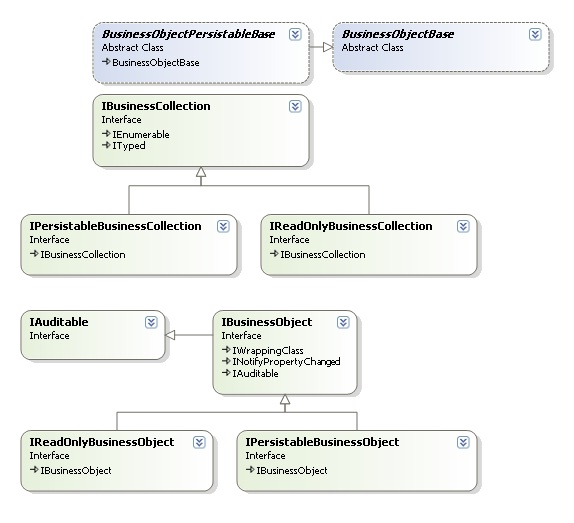
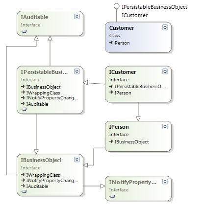
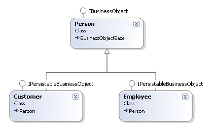

Title: NHydate Code Generator Author: Chris Davis Email: chrisd@gravitybox.com Member ID: 220760 Language: C# 3.5 Platform: Windows, .NET 3.5 Technology: ASP.NET, C#, Code Generation Level: Intermediate, Advanced Description: Generate code with the NHydrate platform Section Platforms, Frameworks & Libraries SubSection .NET Framework License: Ms-PL



The Widgetsphere NHydrate ORM generator is a tool designed to fill the gap for model driven platform development. It allows you to design a model and generate much of your framework from the model including database schema, database static data, data access layer, data transfer layer, unit tests, and a database installation/upgrade library.
The REST functionality is new, as is the data transfer layer and service. This is being updated all the time so check the main site for updates frequently.
The main purpose of an ORM tool is to map a CRUD layer from a database to an easy-to-use API. You can start by building a model from scratch or reverse-engineering an existing database. Once you have a model, it is your master copy. You should not make database changes haphazardly. Make all changes to the model and re-generate. All of your database schema changes should be reflected in the generated and custom database scripts. This insures continuity and allows you to upgrade systems on different versions of your database and API.
Your first model will reflect your database schema. Once you have the model conceptualized, you can start making more advanced modifications described below.
When a model is generated, six projects are created in VS.NET. The first project generated is the core DAL. It contains all the objects and collections for your database. Then the DTO layer is created. This has a mirror of the DAL but with lightweight objects with integrated serialization functionality to query over the wire. The third project is the DTO mapping library. This is used by the data service to map the DAL to the DTO layer. The fourth project is the data service itself. This service is used to process DTO containers sent over the wire. The fifth project is the unit tests. These tests can create a database and insert, update and delete information to ensure that your model has referential integrity. The final project is the installation library. You can run this with the .NET installation utility or include it in a larger application to provide installation capability to users.
The DAL is the core of the system. It contains the concrete classes of the model. These classes can be loaded and saved to the database, as well has having inheritance hierarchies. They may be queried with LINQ syntax and everything about them is strongly-typed. This is the only generated library needed on the client, for database access. It alone is the gatekeeper for all data access. It implements the entities and logic for loading, saving, inheritance, etc. This library is extendable in that all classes are generated as partial classes into two distinct files. There is a user file that is generated once and will not be overwritten and a machine file that is managed by the generator and will be overwritten. There is no need to keep track of regions that the generator will overwrite or protect, like many ORM applications. This philosophy is messy and error-prone. Your custom code will never be overwritten. It is compiled directly into the related entity and there is no way for a user of the compiled library to know the difference between custom and generated code.
The data transfer layer is a set of POCO objects that allow for native Json and XML objects to be serialized across the wire. This can be used in the REST interface provided by the data service. These objects can be used as property containers to pass to façade layers or other layers of your architecture where direct database access is not necessary or restricted. They are used inside of the generated framework as the base for the REST-ful service.
The data transfer library has no other purpose but to map the DTO layer to the DAL layer. It is used by the generated web service to perform bidirectional storage and retrieval operations with the DAL. This library is used on the server in conjunction with the DAL and the server copy of the DTO.
The data server is a generated web service that can be used to interface with a database across the wire. There is no need to add any custom code to get it running. This is a REST-ful service and can expose objects directly to script on a web page with Json and XML objects.
The installation project contains all the code to create a new database or update an existing one. When a new database is created, all tables, stored procedures, indexes, relationships, and static data are created. The database is ready to be used by the DAL. Each database is versioned upon creation or modification. The installation application determines the current version of the database and upgrades it to the newest version. This allows you to keep a full record of all database changes so production can be updated with a new version atomically.
This project is compiled into a library not an application. The library can be run directly from the .NET environment by associating it with .NET tool InstallUtil.exe, or incorporated into a larger application. Running in the .NET tool means that you can execute your database changes while developing without ever leaving the .NET environment. Incorporation in a larger application usually means a custom installation application, but it can be any application really.
When you make model changes and regenerate your code, update scripts are created that will transform the previous database format into the new database format. You may also add your custom scripts to the provided versioned SQL files that will only be run when updating from version X to version X+1. Custom scripts can be added and scheduled to run before or after an update. Custom static data scripts can be added to the static data defined within the model. You can add any arbitrary script to the library and it will be executed. This provides a lot of flexibility to your deployment process.
It is important to note that all generated stored procedures are compiled into this library as well. You may add custom stored procedures, views, etc if you wish. You can truly treat this library as you database upgrade path. Since all of the scripts are embedded in to the library it could get quite large. To combat this issue, the library can natively read ZIP files. Simply create a ZIP file with any number of SQL files in it and they will be executed. This is a nice feature for those who have very large static script files like zip codes, company directories, etc. There is nothing special to do. Simply embed a ZIP file just like any other SQL file and all files will be executed in alphabetical order at the same folder level.
The generated objects have concepts attached to them like data type, nullable type, enumerated type, and error-checking. Depending on the settings of an object's fields in the model, the generated object will have certain properties associated with each field. Of course a field's data type is used to create a corresponding .NET type for the generated object. However there are more advanced features as well. A field marked as nullable, is generated with a nullable .NET type. You can look at all non-string fields and know if a null value is permissible since the .NET type either allows it or not. A string is a reference type, so you cannot determine this attribute just by its data type.
Strong error-checking is implemented by not allowing client code to assign values that will break the database, as much as possible. If a null value is passed to a non-nullable field, an error is raised. All objects have meta-data descriptors like length, nullable, type, etc. You can use these attributes to limit UI data entry to valid data. There are also common business object functions that allow you to set or retrieve data in a common way, based on interfaces and field enumerations. The common base functionality of the framework allows for the construction of application to be written that are not domain specific. In other words, you can write applications that can take any generated API based on any domain model and plug it in for user manipulation.
Enumerated types are static types that map to unchanging (or seldom-changing) data. A user type table is a good example of this. You may have a number of user types but they almost never change. Instead of assigning "magic numbers" to these values, simply let the generator handle it for you. From there you can assign an enumeration in your code and not a number. You code is much more readable and developers can tell immediately what the value means.
All generated objects implement one or more interface or abstract base classes. This allows for the creation of very versatile applications. All generated mapped objects implement numerous interfaces, some based on whether the object is a read-only or persistable or other such permissible actions. You can build applications that take in base objects and interact with the user based on the type of object passed in. At run-time you can get and set an object's fields without know exactly what type of object it is. The audit fields are accessible by interface as are search objects and primary keys.
The business objects come in two flavors, read-only and persistable. You can define objects as read-only, so they can be selected but not saved. This comes in handy for type tables and also base object tables. The latter is quite interesting in that you can define a table that has no meaning by itself but is the base class of a concrete object. An example of this is an abstract Person that is the base for Customer and Employee. There may be no such thing as a generic Person in your business rules only Customers and Employees. In this case, make the parent table of each the Person entity and make the Person entity read-only. In code, developers can only create Customers and Employees but not Persons.
Notice in the above diagram that the interface model is quite robust. Customer inherits not only from Person but also ICustomer which in turn inherits from IPerson. All business objects are auditable. Persistable objects are derived from the less functional, read-only, objects and interfaces. This model exposes many possibilities when creating user interfaces and business logic.
The generator is not hampered by a one-to-one concrete mapping of database objects to classes. The model supports object inheritance. You can define a base type and inherit any number of objects from it. The back-end database synchronization is handled under the covers. There is no special programming around this concept. The only requirement is that a derived class has the same primary key, cardinality, name and data type. When you select an inherited object, you see all the fields like a truly inherited object. There is no way to tell that some fields are derived from a base table in the database. All the complex joins and field mappings are handled under the covers and you never have to worry about which field comes from which table.
In the example above, the associated class diagram would follow. Notice that Person entity is derived from IBusinessObject. This is an interface that defines no save functionality. The child classes of Customer and Employee are derived from Person but also implement the interface IPersistableBusinessObject. This interface exposes a Persist method.
The generated objects follow the observer pattern in that you can register for notification of events. Each object has a global event that is raised before and after a field is changed. There are also events for each individual field so you can capture a message for a single field.
Since the generated framework is modeled, you get strongly-typed objects. This allows you to have compile-time errors, not run-time errors. When an object field needs to be changed in any way, be it the data type, name, nullable, etc, simply change the model and re-generate. When you try to compile your application you will get errors found by the compiler. This is much better than accessing fields by a string comparison that cannot be checked by the compiler.
All objects are generated in partial classes. There is a shell class that is generated once and will not be overwritten and a "generated" class that is controlled by the model generated and will always be overwritten. This allows you to add your custom code the shell class and have it appear as a fully integrated component of the object.
Many times it is necessary to know the state of all database rows at all points in time. Financial auditing is one use of this functionality. It can be used for database administrators (or developers) to determine when any value changes in any row in any table. This is quite a useful feature for anyone who actually has need of this functionality and quiet non-trivial to actually build. This is not information that can be retrieved unless an auditing system is in place, since a normal database only stores the current state of a row and not all past states.
When a table is marked to allow auditing, a shadow table is created and maintained by the system, of all changes to the table. This includes additions, updates, and deletes. It is as easy as setting the table property and table activity is recorded no matter how the table is modified. This even includes modifications made outside of the generated framework.
An important feature of any database access technology is the ability to page through large sets of data. Not only does the generator allow you to do this but it allows created a strongly-typed paging object for all object types. This allows you to define in a very precise way how to page through data. For example, if you are sorting by a particular field and later remove this field from the model, a compile-time error will be generated since everything is strongly-typed. Ordering is very important when paging, since you the next page of objects returned must be deterministic. That said you can order by any number of fields with an entity's paging object.
You can define that some fields are searchable in the model. This will ensure that the fields are indexed in the database and create the appropriate select by field name methods on the parent collection. This allows searching by based on a field extremely fast, since the field is indexed and the search mechanism is a stored procedure. A more complete description follows later.
You can actually add static data to the model to initialize data in tables. If you have a type table, you might want to ensure that certain data is present in a table when a database is created. There is a GUI that allows you to set each field in a table to a specific value.
You may create an empty subdomain and define select commands that are executed in batch. There may be a business reason for loading in batch, for example a disconnected data set. In this case, there are numerous predefined select commands that can be added to the rules cache of a subdomain and execute at one time. This is in contrast with the dependency walking described later which hits the database every time data is needed. There are pre-defined select commands for select all, select by field, select by relationship, etc. However you can also define your own select commands and use them interchangeably.
The select commands are actually used during dependency walking but can be used separately to load developer specified sets of objects. There are predefined select methods for all primary and foreign keys, as well as fields marked as searchable. All select commands are generated as partial classes and can be extended with custom select commands. An example of this is a situation where you want to load objects based on some set of non-key fields. You can create a select command that calls a custom stored procedure and then add it to the select queue like any other generated select command. Of course you can select by arbitrary fields using the LINQ functionality described below, but these cannot be queued and run in a single transaction.
The RunSelect method of each collection is overridden many times. One of the included ways to query data is to pass in a LINQ query. This feature provides you with maximum flexibility since you can perform complex queries that are just not possible with the out of the box, generated methods. Also you can perform complex queries based on your relationships to other tables (or objects). For example, the where condition can be defined based on table field, a parent table field, a related table's field, a related table's parent table's field, etc. Or perform all of this in the same query. As a provided convenience, there is no need to know the inheritance hierarchy of entities because you interact with objects as if they contain all their fields as well as the fields of the parent objects. This allows you to use an object without having to know that it has five layers of inheritance under it.
Another fact worth mentioning is that you never need to join tables. All of the relationships are defined in the model, so you can describe the where condition by referencing tables but never defining linking criteria. The makes your code much easier to read and ensures that developers do not have to memorize the structure of the database in order to write correct joins. This is a big win for code readability and consistency. Developers cannot join on incorrect fields that produce too many (or too few) results. This condition often causes unintended consequences in that the data looks correct but actually is being joined on the wrong fields. The model architect ensures that all developers are accessing data in the correct way.
There are numerous ways to search. First you can search with a predefined search object. There is a strongly-typed search object generated for each entity type. It allows you to define any of the object's field for searching based on a "AND /OR" connector.
CustomerSearch search = new CustomerSearch(Widgetsphere.Core.DataAccess.SearchType.AND); search.BaseName = "SomeValue"; CustomerCollection customerCollection = CustomerCollection.RunSelect(search, "");
You can also page through results using the entity's paging object. This allows you to define an ordering and load one page at a time.
CustomerSearch search = new CustomerSearch(Widgetsphere.Core.DataAccess.SearchType.AND);
search.BaseName = "SomeValue";
CustomerPaging paging = new CustomerPaging(1, 10,
Customer.FieldNameConstants.PersonId, true);
CustomerCollection customerCollection = CustomerCollection.RunSelect(search, paging, "");
Now with LINQ you can actually performs some ad-hoc querying while still using strongly-typed objects.
CustomerCollection customerCollection = CustomerCollection.RunSelect(x=>x.BaseName == "SomeValue");
The code above returns the same result as using the search object, but now you can write arbitrarily complex queries, even using implicit joins.
CustomerCollection customerCollection = CustomerCollection.RunSelect(x => x.BaseName == "SomeValue" && x.UserType.Name == "MyType");
Notice that the complex LINQ query above actually is joining three tables. A Customer is derived from Person and Person has a relation to UserType. The parent-child relationship is transparent in this query. It looks like Customer has an associated UserType object, which it is through its inheritance from Person. Also note that there are no join operators in this query. There is no need to define the relationships because they are already described in the model.
Not only can you query based on implicit joins down the inheritance chain and laterally with related entities, but you can also query across multiple relations with different cardinalities. In the code below, Customer has a one-to-many relationship with Package. You do not notice it right away because the query looks exactly the same as when looking down the inheritance chain or laterally in the relationship graph. There is no identifier of singularity or plurality.
CustomerCollection customerCollection = CustomerCollection.RunSelect(x => x.BaseName == "SomeValue" && x.Package.Name == "Pack1");
There is no reason to know the cardinality of the relationship. You simply want find Customers that have a related Package object with some field value. This is same question we are asking above when we want to find Customers with a related UserType object, even though a Customer can only have one UserType. This is another aspect of how the database model is abstracted from the code.
In the model you can define fields on which to search at runtime. This aids in development since there are many times when you are searching based on the same field of an object. When a field is marked as searchable in the model, a database index is created and a custom static search method is generated on the entity's related collection class. This allows you to search for a group of objects with one line of code.
CustomerCollection customerCollection =
CustomerCollection.SelectByBaseName("SomeValue");
This is quite useful of course but if there are many objects you may need to page through them as well. You can use the Customer paging object to do this.
CustomerPaging paging =
new CustomerPaging(1, 10, Customer.FieldNameConstants.PersonId, true);
CustomerCollection customerCollection =
CustomerCollection.SelectByBaseName("SomeValue", paging, "");
A very useful feature of the generated framework is the ability to load an object and "walk" its relationships. There is no reason to define what objects you need up front. Simply load an object and start calling on its related objects. This works in both directions for both parent and child relationships (indeed even self-referencing relations).
//Load all Customers CustomerCollection customerCollection = CustomerCollection.RunSelect(); //Get the first Customer Customer customer = customerCollection[0]; //Write out the UserType System.Diagnostics.Debug.WriteLine(customer.UserTypeItem.Name); //How many Packages does this Customer have? System.Diagnostics.Debug.WriteLine(customer.PackageList.Count); //The Customer's first Package's Customer (pointer back same customer) System.Diagnostics.Debug.WriteLine(customer.PackageList[0].CustomerItem.BaseName);
In the example above, you can walk the Customer relationship to its one UserType object. A Customer has many packages, so there is a PackageList not a PackageItem property. You can then pull the first item from the Package list and find its one Customer, which is of course the same Customer you started with. The relations can be walked up and down the relation graph.
It is interesting to note that all objects are loaded into the same subdomain container. You can make changes to any number of objects in this subdomain as you walk the hierarchy and save with a call to one persist method that is performed on the database in one transaction. All objects will be updated together or fail together.
Another convenience feature is provided with strongly-typed aggregate methods. Instead of selecting a bunch of data and performing aggregate operations, you can call one of the aggregate functions with one line of code. There are functions for Min, Max, Count, Sum, Average, and Distinct. They are all strongly-typed to the data type of the field begin queried. In other words, if you are querying the maximum cost (decimal) field, the result is returned as a decimal not an object. The where clause can be as complex as you wish based on relationships defined in the model. The ways in which you can define the where clause is not predefined. It is completely free-form based on the model.
The code below will return the maximum value of the "basename" field for all Customers with a "personid" less then 100.
string name = CustomerCollection.GetMax(x => x.BaseName, x => x.PersonId < 100); int customerId = CustomerCollection.GetMax(x => x.CustomerId);
There is also an UpdateData aggregate method that will set exactly one field in one or more database rows that match a where condition. This is a convenience method that allows you to set many database rows without having to actually load the rows, set them and save them back to the database. You can update all matching rows in one line of code.
CustomerCollection.UpdateData(x => x.BaseName, x => x.BaseName == "Name1", "Name2");
The code above changes all Customers with a "basename" field value of "Name1" to the new value of "Name2". This functionality is also strongly-typed. You new value cannot be an "object", but must be a string since the field is defined as a string. This ensures reliable code.
There is also a method for deleting in bulk. Using much the same syntax as above, you can call the DeleteData method with a where expression to remove all matching records. This functionality allows you to delete in bulk without selecting data to the client.
The ability to pass in LINQ queries is actually even more useful than just implementing strongly-typed data access based on a model. It actually allows you to define complex queries and use them in multiple places. In the following example, there is a complex where clause for accessing and updating data. Instead of defining the conditional twice, I have defined it once and used it in two aggregate statements.
//Build the "where" statement for later use
Expression<Func<MessageQuery, bool>> where = x =>
x.RecipientUserId == physician.UserId &&
x.ViewedDate == null &&
x.SenderUserId != null &&
x.IsDeleted == false &&
x.NotificationSent == null &&
x.CreatedDate > threshold;
//Use the where statement to get the count
int count = MessageCollection.GetCount(where);
if (count > 0)
{
//Do something...
//Update the notification date to now with where statement
MessageCollection.UpdateData(x => x.NotificationDate, where, DateTime.Now);
}
There are times when you do not want to select all fields for a row in the database. A row might have a blob field with images in it or some other large data that you do not want. To reduce loading-time and memory footprint, you can use table components. These are objects which map to specified fields of exactly one table. Essentially this is a subset of fields for a table. These are full fledged business DAL objects that can be loaded and saved, but not created. So you can load, modify, and persist changes to the database.
After selecting your data with one of the myriad of ways to do so, you will most likely add, modify, or delete objects and want these changes to be persisted to store. Fortunately, the vast majority of the infrastructure to do this is generated. As described above, all objects are contained within a subdomain. You can have any number of subdomains loaded at any time; however they have no knowledge of each other. You can load one or more objects from one or more collections into a subdomain. After making changes, simply call the Persist method of an object, collection, or subdomain to persist the changes. When calling the Persist method on a single object, the object (though not necessarily exactly one database row) is saved. This action may actually map to many physical database rows, since entities can be inherited and thus map to multiple database tables. When calling the Persist of a collection or subdomain the entire subdomain is persisted. The latter action is necessary for referential integrity. All objects are contained within a subdomain even when you do not explicitly create it.
Customer customer = Customer.SelectUsingPK(1); customer.BaseName = "NewName"; customer.Persist();
The code above retrieves a Customer by primary key, modifies it, and saves it. The Customer object does have a parent collection and it in turn is located in a subdomain. You can dynamically add collections to a subdomain and start to perform operations on these new collections. After making any number of modifications you can finally save all the changes with one call in a SQL transaction. The entire modification graph will either succeed or fail.
//Get a customer Customer customer = Customer.SelectUsingPK(1); customer.BaseName = "NewName"; customer.Persist(); //Add the package collection to the subdomain PackageCollection packageCollection = (PackageCollection)customer.ParentCollection. SubDomain[Acme.TestProj.Business.Collections.PackageCollection]; //Add a new package to the collection Package package = packageCollection.NewItem(); package.CustomerItem = customer; package.Name = "MyNewPackage"; packageCollection.AddItem(package); //Save the Customer and Packages in one transaction packageCollection.Persist();
In the code above the final persist saves the entire subdomain. It does not matter if you call a collection's Persist method or its container subdomain's Persist method, the result is the same. Also notice that all actions are strongly-typed. We did not add the PackageCollection by specifying a string identifier. If you change the model to name the Package object a Parcel object, the code above will not compile. You will know immediately that this must be corrected. This methodology is in stark contrast to designs that specify a name in quotes which the compiler cannot check.
All selections and updates are atomic and made inside of a SQL Server transaction. When you load an object, a collection of objects, or multiple collections, these items will exist inside of a subdomain. This is a container that holds all related information. You can have any number of subdomains loaded. They will not interfere with each other and have no knowledge of each other. Every object exists inside of a strongly-typed parent collection object. All collection objects exist inside of a subdomain container. This is implied. Even when you load one object, it already has a parent collection and it a parent subdomain.
This comes into play when objects are persisted. When the Persist method of a collection is called, its entire subdomain is persisted in one SQL transaction.
The architecture of the generated code works well with SQL caching. The generated code uses two distinct querying methods in the background. The first method is a façade over generated stored procedures. This method produces extremely very fast results because the query plan in SQL Server is cached. All [2-N] calls to the stored procedure execute about as fast as SQL can possibly perform the action.
The second method is a parameterized query. This method is employed anytime a LINQ statement is written against the API. In the background a parameterized SQL statement is generated. This has the same benefits as the stored procedure. If you run the same LINQ statement again, the query plan is cached by SQL Server. The caveat is that since LINQ is more free form, you can create a great variety of queries. This attribute executes better in a real-world application than in theory, since applications do not normally issues thousands of distinct queries but issue the same query with differing parameters.
The generator creates code based on standards of the day. The entity objects are based on a hierarchy of interfaces and base classes. Each object can describe metadata about itself like type, size, friendly name, façade, etc. The generated framework implements industry standard software patterns as well. All business objects object implement the Observer pattern for field notifications. The Active Record pattern is used as the main interface with the database. This allows for fast and very flexible querying techniques. For more disconnected requirements, the DTO layer implements the Repository pattern. This separates database access from the developer and allows objects to be sent over the wire. The Visitor pattern is employed on all business collections to allow abstracted iteration or processing on collection objects. The Composite pattern is used to define entity relationships. Dependency walking is a relationship hierarchy that requires no special coding on the part of the developer. All entities have composite objects of their children and parents. This also aids in joining objects with no visible join clauses or statements like SQL. The Interpreter pattern is implemented in the mapping of database objects to .NET entity objects. All entities and fields can have a facade that masks the underlying database field. Keep in mind that one entity can map to multiple database tables and relationships. All of these coding standards are implied in the generated code and derived from the model. No special architectural knowledge is necessary to use these concepts.
The ORM generator does add a lot of functionality to a project. The model allows you to control all aspects of your framework design. All objects have definite types and there is non confusion about which objects are being handled. All actions like adding, deleting, searching, paging, updating, etc are strongly-typed. A most important feature is that if the model changes in a binary incompatible way, compile-time errors will be created not run-time errors. This is one of the most important features of the tool. If objects are re-typed, added, changed, or deleted in the model, a compile-time error is raised and your code (both generated and hand-written) will not build. The issues can be found immediately without errors going out to the production.
The generated model was also designed for coding efficiency. There are numerous overloads for methods so you can load, save, and transfer data with few lines of code. In many cases, only one line of code is required to perform actions. You can actually load or save data, with where qualifying statements, in one line of code. This is very different from frameworks that require all sorts of objects to be declared and passed-in to other objects, in order to load or save data. There are convenient static methods on objects, so you do not need to declare an object to perform many functions like querying, aggregating, and bulk update. This ensures that very minimal code can be quite functional.
Paging is a difficult task to handle in a generic, programmatic way. The generator handles it well by giving you a strongly-typed way to query, sort, and page data. There is no way to interact (select, order, or page) with objects or fields that are not in the model. This truly alleviates the fear programmers have of making database changes. Now you know the code is not broken.
The model driven development imposed by the tool allows you to manage the database and code base with one tool. They are connected and stay in sync at all times.
However in the end the speed at which you can build software is the greatest benefit. You can literally reverse engineer a database into a model and start building an application in minutes not weeks. Developers should not waste their time synchronizing database schema, DAL, middle-tier objects, UI, etc. They should also be able to change to their framework without fear of code breaking in the production. We should not keep software developers busy building CRUD layer, data access routines, and complex stored procedure logic. The generator allows you to address all of these issues and more. By building less error prone, better organized, code much faster, we can concentrate on the more exciting and complex solutions we want to build.